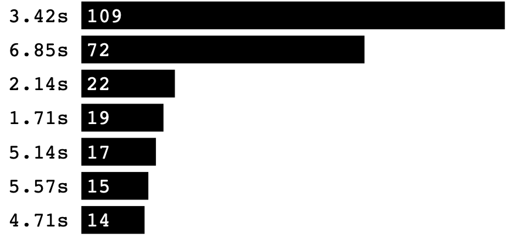

Sei pronto per Jammare con JamMate? Carica o registra la melodia che ti passa per la testa.
Iniziamo
Carica un file audio
Registra la tua traccia dal microfono
usa BPM per registrare:
Torna indietro
Con che generi vorresti sperimentare oggi?
Rap
Latin
Jazz
Pop
Funk
Quanto lungo vuoi che sia il tuo loop?
4 Bars
8 Bars
16 Bars
Quale chiave detectata si addice alla tua faccia di cazzo?
Scegli l'algoritmo per individuare il battere
Algoritmo A
Algoritmo B
Algoritmo C
i
change onset
JAM!
Start
Stop
50
Volume
0
Reverb
0
Delay
50
Volume
0
Reverb
0
Delay
50
Volume
0
Reverb
0
Delay
Torna Indietro
BPM Detection
1. The algorithm receives an audio buffer containing the sound data.
2. It finds the peaks: The algorithm divides the audio into small "parts" and identifies volume peaks for each part.
3. For each peak, the algorithm calculates the interval between that peak and the nearest peaks.

4. Each interval represents a potential beat of the song and is stored in a "group" object.
5. The final BPM is determined by selecting the group with the most frequent BPM value.